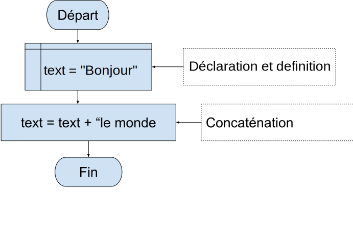
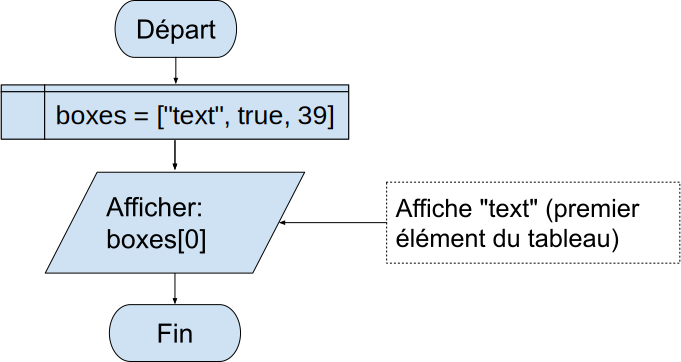
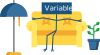

Aide-mémoire
Organisation des systèmes informatiques - CPU
Central Processing Unit (CPU) est le cerveau de l'ordinateur

Introduction à l'informatique - Bits
L'unité de base de la mémoire est appelée bit. Il peut être soit 0 soit 1
Introduction à l'informatique - Bits
Pourquoi binaire, pourquoi pas Quaternaire?
Introduction à l'informatique - Rappel du système décimal
Introduction à l'informatique - Byte
Introduction à l'informatique - Mémoire
Toutes les données d'un ordinateur sont stockées dans des séquences de 0 et de 1.

Introduction à l'informatique - Adresse de la mémoire
Algorithme - Pizza exemple
- Préchauffer le four à 500 degrés et y mettre la pierre.
- Sortez la pâte de blé entier de TJ's.
- Farinez-la et roulez-la
- Puis brosser avec de l'huile d'olive et une solide poussière de farine de maïs.
- Retirez la pierre
- Retournez la croûte sur elle
- Faire cuire pendant environ cinq minutes
- Retirez-le
- Percez les bulles
- Mettez plus d'huile d'olive sur le dessus.
- Puis les garnitures: Huile d'olive, tapenade d'olives, ail frais, champignons, oignons, basilic frais, de la mozzarella en tranches et une pile d'anchois.
- Faites cuire pendant encore 10-15 minutes
- Retirez-le avec votre palette à pizza et prenez-le en photo
- Offrez une tranche à votre invité, en priant pour qu'il ait déjà mangé.
- Consommez-le avec une bonne bouteille de vin rouge bon marché tout en gérant vos nombreuses émotions.
Algorithme - The martingale strategy/Algorithme
- Commence avec 1€ de mise
- Place ta mise sur le noir ou le rouge
- Laissez tourner la roue
- Si vous perdez, doublez la dernière mise et retournez à l'étape 2
- Si vous gagnez, prenez votre dernière mise et l'argent gagné, recommencez au début de 1€ et retournez à l'étape 2
Flowchart (Organigramme)
L'organigramme est une présentation graphique d'un algorithme

Pseudocode
Le pseudocode est un code de programme qui ne sert pas à l'interprétation par une machine, mais uniquement à illustrer un paradigme ou un algorithme.
Cependant, parce que c'est cool d'avoir un code qui n'est pas seulement sur papier mais qui fait réellement quelque chose, nous utiliserons un éditeur en ligne de pseudocode.
input A
B = A * 4
output B
Comments - Flowchart
Les commentaires sont le moyen le plus simple de documenter votre code.
Les langages de programmation ignorent tout simplement tout texte défini comme un commentaire.
Dans un organigramme, un commentaire est un rectangle en pointillés contenant un texte descriptif.

Comments - Pseudocode
Les commentaires donnent des informations aux personnes qui lisent votre code.
Tout texte entre un // et la fin d'une ligne est traité comme un commentaire et est ignoré.
Les commentaires peuvent être placés à la fin d'une ligne, le reste de la ligne est ignoré
output "Hello, World!" //This is a comment
Un commentaire ne doit pas nécessairement être un texte qui explique le code, il peut également être utilisé pour empêcher l'exécution du code
//output "Hello, World!"
output "Cheers, Mate!"
Variables
Une variable est simplement une zone de stockage.
Vous placez des éléments dans vos zones de stockage (variables)
afin de pouvoir les utiliser et les manipuler dans vos programmes.

Variables
Une variable est le nom d'une cellule de mémoire.
Elle est dite "variable" car la valeur contenue dans la cellule peut changer.
Chaque cellule de mémoire a une adresse.
Variables - Déclaration/Définition dans Flowchart
Variables - Déclaration/Définition dans Pseudocode
Nous faisons la déclaration et la définition en une seule ligne pour ce compilateur de pseudocode. Si vous voulez,
vous pouvez aussi faire la déclaration et la définition en une seule ligne dans l'organigramme/flowchart.
Data Types - Numbers
Exercice : Dessinez un organigramme/flowchart pour échanger deux nombres. Ensuite, écrivez-le en pseudo-code et exécutez-le
Example:
a = 39, b = 25
après échange:
a = 25, b = 39
Data Types - Numbers - Flowchart
Data Types - Numbers - Pseudocode
Solution:
a = 39
b = 25
third = a
a = b
b = third
output a
output b
a = 45
b = 105
a=a+b
b=a-b
a=a-b
output a
output b


Opérateurs arithmétiques
Exercice: Calcule le salaire mensuel si ton salaire brut en tant que développeur est de 32000€ par an
(réaliste dans la région de Toulouse après la formation).
Le salaire net est d'environ 75% du salaire annuel.
Opérateurs arithmétiques
Exercice: Il est actuellement minuit.
Quelle heure sera-t-il après 40 heures passées sur une horloge de 12 heures ?
Utilisez l'opérateur modulo % pour calculer l'heure

Data Types - Strings
Les Strings (chaînes de caractères) sont une représentation du texte

Data Types - String - Concatenation
Dans la plupart des langages de programmation, si vous utilisez l'opérateur sur des chaînes de caractères, il les joint en ajoutant la deuxième à la première.
Nous garderons le même comportement pour l'organigramme

Data Types - String - Concatenation - Pseudocode
text = "bonjour"
text = text + " le monde"
output text
Data Types - Booleans
Une valeur booléenne représente la vérité ou la fausseté, on ou off, oui ou non. Il n'y a que deux valeurs possibles de ce type.
Les mots réservés true et false évaluent ces deux valeurs
Arrays
Un tableau (array) est une collection ordonnée de valeurs. Chaque valeur est appelée un élément,
et chaque élément a une position numérique dans le tableau, appelée son index.
Lecture des éléments d'un Array

Pseudocode:
boxes = ["text",true,39]
output boxes[0]
Écriture des éléments d'un Array

Pseudocode:
boxes = ["text",true,39]
boxes[0] = "Salut"
boxes[1] = false
boxes[2] = 69
output boxes //['Salut', False, 69]
Array Length
Chaque tableau possède une propriété de longueur (length). La propriété length spécifie le nombre d'éléments du tableau.
Sa valeur est supérieure d'une unité à l'indice le plus élevé du tableau
Array Length - Pseudocode
Pseudocode:
arr = [1,2,3,4]
size = len(arr)
output size //4
Opérateurs de comparaison
Les opérateurs de comparaison sont utilisés pour comparer deux valeurs et renvoyer un résultat booléen,
que nous testerons et sur lequel nous agirons dans une déclaration et un programme plus larges
| Operator |
Nom |
Exemple |
| == |
Egale |
x == y |
| == |
valeur égale et type égal |
x == y |
| != |
Non égal |
x != y |
| > |
Supérieur à |
x > y
|
| < |
Inférieur à |
x < y |
| >= |
Supérieur ou égal à |
x >= y |
| <= |
Inférieur ou égal à |
x <= y |
Opérateurs de comparaison
Pseudocode:
result = 1 < 2
output result //true
Opérateurs de comparaison
Pseudocode:
result = 2 != 2
output result //true
Opérateurs de comparaison - Quiz
Opérateurs logiques
Il existe trois opérateurs d'expression booléenne dans la plupart des langues de programmation
| Operator |
Description |
Exemple |
| and |
Retourne Vrai si les deux déclarations sont vraies |
x < 5 and x < 10 |
| or |
Renvoie Vrai si l'une des déclarations est vraie. |
x < 5 or x < 4 |
| not |
Inverse le résultat, renvoie Faux si le résultat est vrai. |
not(x < 5 and x < 10) |
Opérateurs logiques - and
Elle donne True si les deux conditions sont True. Et elle donne False si l'une ou l'autre des conditions a ou b est False.
| a |
b |
a and b |
| True |
True |
True |
| True |
False |
False |
| False |
False |
False |
| False |
True |
False |
Logic Gates - AND
| A |
B |
RESULT |
| 0 |
0 |
0 |
| 0 |
1 |
0 |
| 1 |
0 |
0 |
| 1 |
1 |
1 |
Opérateurs logiques - and
Opérateurs logiques - and
Pseudocode:
bool1 = 1 < 2
bool2 = 3 == 3
result = bool1 and bool2
output result //True
Opérateurs logiques - or
Comme l'opérateur and, l'opérateur or vérifie plusieurs conditions. Mais il renvoie True lorsque l'une ou l'autre ou les deux conditions individuelles sont vraies (True) :
| a |
b |
a or b |
| True |
True |
True |
| True |
False |
True |
| False |
False |
False |
| False |
True |
True |
Logic Gates - OR
| A |
B |
RESULT |
| 0 |
0 |
0 |
| 0 |
1 |
1 |
| 1 |
0 |
1 |
| 1 |
1 |
1 |

Opérateurs logiques - or
Pseudocode:
bool1 = 1 > 2
bool2 = 3 == 3
result = bool1 or bool2
output result //True
Opérateurs logiques - not
L'opérateur not s'applique à une seule condition. Et il inverse le résultat de cette condition, True devient False et False devient True.
| a |
not a |
| True |
False |
| False |
True |

Opérateurs logiques - not
Opérateurs logiques - not
Pseudocode:
bool1 = 1 > 2
result = not bool1
output result //True
Prédominance des opérateurs logiques
Lorsque vous mélangez les opérateurs logiques dans une expression,
Python les évalue dans l'ordre qui est appelé la précédence des opérateurs.
L'exemple suivant montre la préséance des opérateurs not, and, et or :
| Operator |
Prédominance |
| not |
Haut |
| and |
Moyen |
| or |
Faible |
Prédominance des opérateurs logiques
| a or b and c |
signifie |
a or (b and c) |
| a and b or c and d |
signifie |
(a and b) or (c and d) |
| a and b and c or d |
signifie |
((a and b) and c) or d |
| not a and b or c |
signifie |
((not a) and b) or c |
a = True
b = False
c = True
result = a or b and c #True
output result
result = a or (b and c) #True (même instruction que ci-dessus)
output result
result = not a and b or c
output result
result = ((not a) and b) or c #True (même instruction que ci-dessus)
output result
Opérateurs logiques - Quiz
Conditional operation
Ce chapitre présente l'Opération conditionnelle, qui est la principale instruction utilisée
pour sélectionner des actions alternatives en fonction des résultats des tests.
Conditional operation - Format général
Conditional operation - Format général
Pseudocode:
input direction
if direction == "Toulouse" then
output "aller à gauche"
else
output "aller à droite"
end if
Conditional operation - Un autre exemple
Conditional operation - Format général
Pseudocode:
input age
if age < 18 then
output "vous êtes mineur"
else
output "vous êtes majeur"
end if
Conditional operation - Exercice
Faites un message d'accueil "bonne journée" si l'heure est inférieure à 18:00.
Pour obtenir l'heure actuelle, nous demandons à l'utilisateur de la saisir.
Conditional operation - Exercice
Pseudocode:
input hour
greeting = ""
if False then
greeting = "bonne journée"
end if
output greeting
Conditional operation - Exercice
Maintenant, nous prolongeons l'exercice précédent et souhaitons "Bonne soirée" après 18:00.
Conditional operation - Exercice
Pseudocode:
input hour
greeting = ""
if hour < 18 then
greeting = "bonne journée"
end if
output greeting
Conditional operation - Exercice
Ok maintenant, la dernière étape est de souhaiter une "bonne matinée" avant 9:00.
Conditional operation - Exercice
Pseudocode:
input hour
greeting = ""
if hour < 18 then
greeting = "bonne journée"
end if
output greeting
Conditional operation - Nested
Nous pouvons imbriquer les opérations conditionnelle bien sûr
Pseudocode:
if condition then
if condition then
end if
end if
Conditional operation - Exercice
Comme je viens d'Allemagne, nous disons autre chose selon l'heure de la journée.
Développons notre exercice en vérifiant si nous sommes en Allemagne ou non et en saluant dans la langue correspondante.
Conditional operation - Exercice
Pseudocode:
input hour
pays = "Allemagne" #ou France
greeting = ""
if hour < 9 then
greeting = "bonne matinée"
//"Guten Morgen" en allemand
else if hour < 18 then
greeting = "bonne journée"
//"Guten Tag" en allemand
else
greeting = "bonne soirée"
//"Guten Abend" en allemand
end if
output greeting
Conditional operation chained condition - Exercice
Le coût d'entrée dans un parc pour enfants est de 10€ pour toute personne âgée de 4 à 12 ans.
Les autres personnes ne paient que 6€.
Écrivez un opération conditionnelle utilisant && qui vérifie la tranche d'âge et ajuste le prix en conséquence.
Conditional operation - Exercice
Pseudocode:
age = 8
price = 6
//Placez la logique
//if ici en utilisant
//&& pour enchaîner les tests.
output "Le prix d'entrée est de ", price
Loops
Je vais présenter les deux principales constructions de boucles du langage - des énoncés qui répètent une action encore et encore
Loops
Pseudocode:
a = 0
b = 10
loop while a < b
output a
a = a + 1
end loop
Loops - break, continue
break: Saute hors de la boucle la plus proche (au-delà de l'énoncé de la boucle).
continue: Saut au sommet de la boucle la plus proche (à la ligne d'en-tête de la boucle).
Loops
Pseudocode:
loop a from 0 to 10
if a > 7 then
break
end if
output a
end loop
Loops
Pseudocode:
loop a from 0 to 10
if a == 7 then
continue
end if
output a
end loop
a = 0
b = 10
loop while a <= b
if a == 7 then
a = a+1
continue
end if
output a
a = a + 1
end loop
while Loops - exercise
Comptez de 1 à 100 en utilisant une boucle et affichez chaque étape sur la console avec print().
while Loops - exercise
imprimer tous les éléments d'une array en utilisant une boucle
Functions
En termes simples, une fonction est un outil qui regroupe un ensemble d'instructions de manière à ce qu'elles puissent
être exécutées plusieurs fois dans un programme - une procédure packagée invoquée par son nom.
- Une fonction est un bloc de code qui ne s'exécute que lorsqu'il est appelé.
- Vous pouvez transmettre des données, appelées paramètres, à une fonction.
- Une fonction peut renvoyer des données comme résultat.
Functions - Pourquoi utiliser des fonctions ?
Avant d'entrer dans les détails, il faut établir une image claire de ce que sont les fonctions
- Maximiser la réutilisation du code et minimiser la redondance
Les fonctions constituent le moyen le plus simple de d'emballer la logique que
vous souhaitez utiliser à plusieurs endroits et à plusieurs reprises
- Procedural decomposition
Les fonctions constituent également un outil permettant de diviser les systèmes en parties
ayant des rôles bien définis. Par exemple, pour faire une pizza à partir de rien,
il faut commencer par mélanger la pâte, l'étaler, ajouter les garnitures, la faire cuire,
etc. Si vous deviez programmer un robot pizzaïolo, les fonctions vous aideraient à diviser
la tâche globale de "fabrication d'une pizza" en plusieurs parties, une fonction pour
chaque sous-tâche du processus. Il est plus facile d'implémenter les petites tâches
isolément que d'implémenter l'ensemble du processus en une seule fois.
Functions - def Statements ?
L'instruction def crée un objet fonction et l'affecte à un nom. Son format général est le suivant :
def name(arg1, arg2,... argN):
statements
end def
def se compose d'une ligne d'en-tête suivie d'un bloc d'instructions, généralement indenté. Le bloc d'instructions devient le corps de la fonction,
c'est-à-dire le code que le Pseudocode exécute chaque fois que la fonction est appelée par la suite.
L'instruction return peut apparaître n'importe où dans le corps d'une fonction ;
lorsqu'elle est atteinte, elle met fin à l'appel de la fonction et renvoie un résultat à l'appelant
Functions - Simple
Pseudocode:
def my_function(fname)
output fname," Refsnes"
end def
my_function("Emil")
my_function("Tobias")
my_function("Linus")
Functions - Calls/Appelle
L'instruction def crée une fonction mais ne l'appelle pas.
Après l'exécution de l'instruction def, vous pouvez appeler (exécuter)
la fonction dans votre programme en ajoutant des parenthèses après le nom de la fonction
def times(x, y) # Créer et attribuer une fonction
return x * y
end def
Les parenthèses peuvent éventuellement contenir un ou plusieurs arguments
d'objet, qui seront passés (assignés) aux noms de l'en-tête de la fonction
times(2, 4) // Arguments in parentheses
//La fonction renvoie 8
Maintenant, regardez ce qui se passe quand la fonction est appelée une autre fois, avec des objets très différents types:
times('Ni', 4) // Les fonctions sont "sans typologie"."
//La fonction renvoie 'NiNiNiNi
Functions - Scopes
Les scopes permettent d'éviter les conflits de noms dans le code de votre programme :
les noms définis dans une unité de programme n'interfèrent pas avec les noms d'une autre unité.
Lorsque vous utilisez un nom dans un programme, Python crée, modifie ou recherche le nom dans
ce que l'on appelle un espace de noms, c'est-à-dire un endroit où vivent les noms.
L'endroit où vous attribuez un nom dans votre code source détermine l'espace de nom dans lequel il va vivre et donc sa visibilité.

Functions - Scopes
les variables peuvent être assignées à trois endroits différents, correspondant à trois scopes différentes
- Si une variable est assignée à l'intérieur d'une def, elle est locale à cette fonction.
- Si une variable est assignée dans une def englobante, elle est non locale aux fonctions imbriquées.
- Si une variable est assignée en dehors de toutes les defs, elle est globale à l'ensemble du fichier.
Par exemple, dans le fichier de module suivant, l'affectation X = 99 crée une variable globale nommée X (visible partout dans ce fichier),
mais l'affectation X = 88 crée une variable locale X (visible uniquement dans l'instruction def) :
X = 99 # Global (module) scope X
def func()
X = 88 # Local (function) scope X: une autre variable
output x
end def
func() #il affiche 88
output X
Functions - Nested Scope Examples
le def est simplement une instruction exécutable, qui peut apparaître partout où une autre instruction peut apparaître
, y compris imbriquée dans un autre def. Ici, le def imbriqué s'exécute pendant qu'un appel à la fonction f1 s'exécute ;
il génère une fonction et l'assigne au nom f2, une variable locale dans le scope local de f1. En un sens, f2 est une
fonction temporaire qui ne vit que pendant l'exécution de (et n'est visible que par le code de) la fonction f1 qui l'entoure
X = 99 // Global scope name: pas utilisé
def f1()
X = 88 // Enclosing def local
def f2()
// Reference fait dans nested def
output X
end def
f2()
end def
f1() // affiche 88: enclosing def local
Functions - Arguments
Les diapositives suivantes poursuivent l'histoire des fonctions en étudiant les concepts du passage d'arguments,
c'est-à-dire la façon dont les objets sont envoyés aux fonctions en tant que données d'entrée.
Comme nous le verrons, les arguments (aussi appelés paramètres) sont affectés à des noms dans une fonction,
mais ils ont plus à voir avec les références d'objets qu'avec les scopes de variables.
Functions - Argument-Passing Basics
Les arguments sont transmis en assignant automatiquement des objets aux noms de variables locales.
Les arguments de fonction (références à des objets partagés envoyées par l'appelant) ne sont qu'un autre
exemple d'affectation à l'œuvre. Les objets passés en tant qu'arguments ne sont jamais copiés automatiquement.
C'est un peu comme faire : box = box2 = "text"
Functions - Argument-Passing Basics
L'affectation des noms d'arguments à l'intérieur d'une fonction n'affecte pas l'appelant.
Les noms des arguments dans l'en-tête de la fonction deviennent de nouveaux noms locaux lorsque la fonction s'exécute,
dans la portée de la fonction. Il n'y a pas d'alias entre les noms d'arguments de la fonction
et les noms de variables dans le scope de l'appelant.
C'est un peu comme faire :
box = box2 = "text"
box2 = "nouveau texte"
Functions - Argument-Passing Basics
La modification de l'argument d'un objet mutable dans une fonction peut avoir un impact sur l'appelant.
D'un autre côté, comme les arguments sont simplement affectés à des objets transmis,
les fonctions peuvent modifier les objets mutables transmis sur place, et les résultats peuvent affecter l'appelant.
Les arguments mutables peuvent être des entrées et des sorties pour les fonctions
Exemple :
arr = [1,2,3,4]
def mutate(arr)
arr[0] = 100
end def
mutate(arr)
output arr[0]

arr = [1,2,3,4]
def mutate(arr)
arr = [100,200,300,400]
end def
mutate(arr)
output arr[0]
Functions - Nombre d'arguments
Par défaut, une fonction doit être appelée avec le nombre correct d'arguments.
Cela signifie que si votre fonction attend 2 arguments, vous devez appeler la fonction avec 2 arguments, ni plus, ni moins.
Cette fonction attend 2 arguments, et reçoit 2 arguments :
def my_function(fname, lname)
output fname,lname
end def
my_function("Emil", "Refsnes")
Cette fonction attend 2 arguments, mais n'en reçoit qu'un seul:
def my_function(fname, lname)
output fname,lname
end def
my_function("Emil")
Functions - Paramètre Valeur par défaut
Si nous appelons la fonction sans argument, elle utilise la valeur par défaut
def my_function(country = "France"):
output "mon pays de naissance est ", country
end def
my_function("Germany")
my_function()

Functions - Valeurs de retour
Pour qu'une fonction renvoie une valeur, utilisez l'instruction return :
Pseudocode:
def my_function(x):
return 5 * x
end def
output my_function(3)
output my_function(5)
output my_function(9)
Logic Gates - AND
| A |
B |
RESULT |
| 0 |
0 |
0 |
| 0 |
1 |
0 |
| 1 |
0 |
0 |
| 1 |
1 |
1 |
Logic Gates - OR
| A |
B |
RESULT |
| 0 |
0 |
0 |
| 0 |
1 |
1 |
| 1 |
0 |
1 |
| 1 |
1 |
1 |
Logic Gates - NAND (NOT AND)
| A |
B |
RESULT |
| 0 |
0 |
1 |
| 0 |
1 |
1 |
| 1 |
0 |
1 |
| 1 |
1 |
0 |
Logic Gates - NOR (NOT OR)
| A |
B |
RESULT |
| 0 |
0 |
1 |
| 0 |
1 |
0 |
| 1 |
0 |
0 |
| 1 |
1 |
0 |

Logic Gates - XOR (EXCLUSIVE OR)
| A |
B |
RESULT |
| 0 |
0 |
0 |
| 0 |
1 |
1 |
| 1 |
0 |
1 |
| 1 |
1 |
0 |
Logic Gates - Half Adder/Bit addition (exemple d'application)
| A |
B |
SUM |
CARRY |
| 0 |
0 |
0 |
0 |
| 0 |
1 |
1 |
0 |
| 1 |
0 |
1 |
0 |
| 1 |
1 |
0 |
1 |